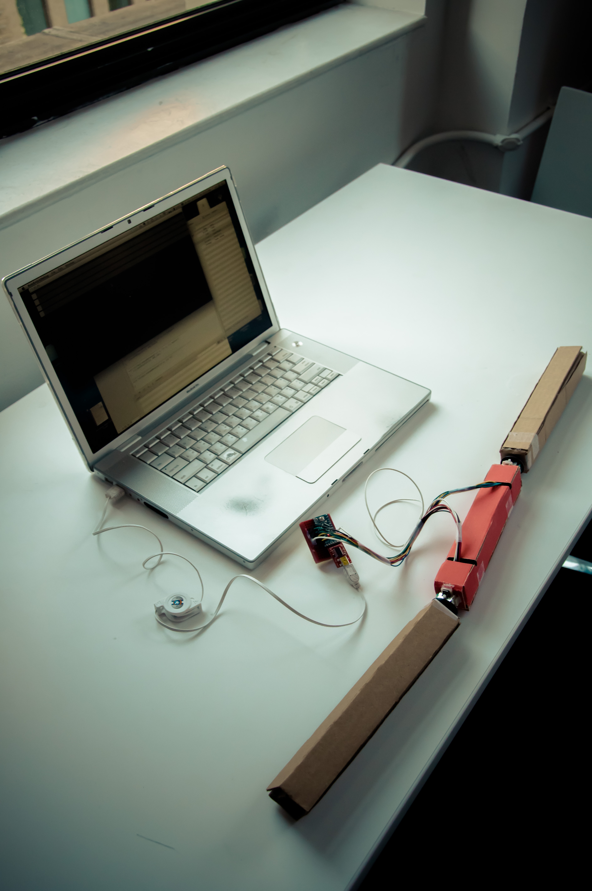
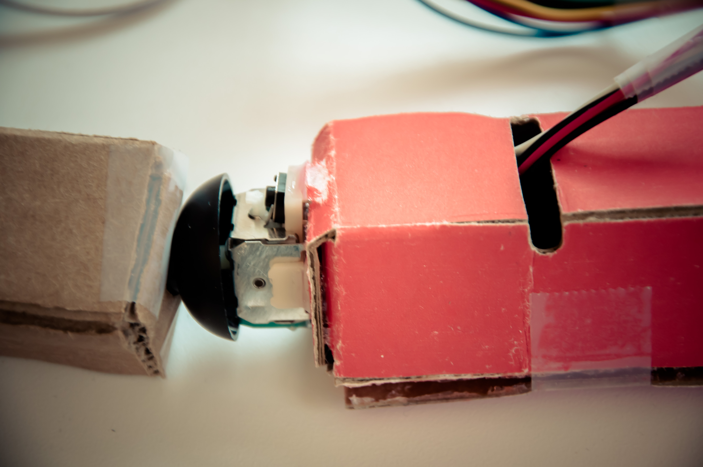
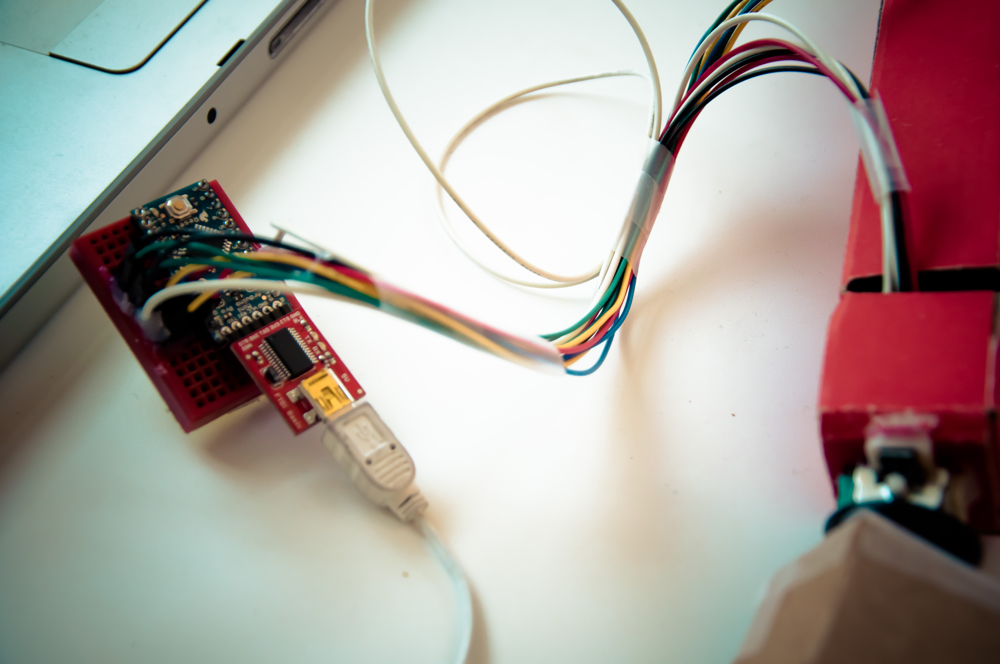

<div class="row">


	<div class="fr-work-text col-xs-12 col-md-4 col-md-push-8">
		<h3>{{page.title}}</h3>
		<h5>{{page.year}}</h5>
		<h6>{{page.tags}}</h6>
		{% if page.collab %}
		<h6> in collaboration with {{page.collab}}</h6>
		{% endif %}
		  
		<p>
			Rapid prototype of a physical gestural music instrument. Its shape is borrowing from something you could imagine Bruce Lee swinging around. However, with this instrument you don't need to have as much level of acting, muscle, or martial arts skills to make weird sound.  
		</p>
		<p>
			The project is written in OpenFrameworks (C++) and Arduino.
		</p>

	</div>


	<div class="fr-work-img col-xs-12 col-md-8 col-md-pull-4">  

		
		
		<div class="flex-video widescreen">
			<iframe width="560" height="315" src="//www.youtube.com/embed/FUj5K_BG9eA" frameborder="0" allowfullscreen></iframe>
		</div>
		
		
	</div>


</div>
{% include worktile.html %}